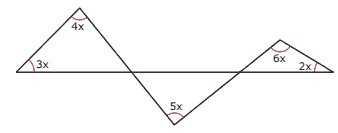

Diário de Bordo
Diário de Bordo
Preparamos 10 questões especiais para o seu proveito, se prepara para queimar uns neurônios ae hehe ; )
01. Triângulos e Pontos Notáveis: (UFU-MG) Na figura a seguir, o ângulo x, em graus, pertence ao intervalo:

intervalo do ângulo x em graus
A) (0°, 15°)
B) (15°, 20°)
C) (20°, 25°)
D) (25°, 30°)
02. (UFMG) Observe a figura. valor de x em graus. Nela, a, 2a, b, 2b e x representam as medidas, em graus, dos ângulos assinalados.
O valor de x, em graus, é:
A) 100
B) 110
C) 115
D) 120
03. (UFES) Um dos ângulos internos de um triângulo isósceles mede 100°. Qual é a medida do ângulo agudo formado pelas bissetrizes dos outros ângulos internos?
A) 20°
B) 40°
C) 60°
D) 80°
E) 140°
04. (UFPE) Na figura a seguir, DETERMINE o ângulo que é oposto ao lado de menor comprimento.
05. Triângulos e Pontos Notáveis: (UNITAU-SP) O segmento da perpendicular traçada de um vértice de um triângulo à reta suporte do lado oposto é denominado:
A) mediana.
B) mediatriz.
C) bissetriz.
D) altura.
E) base.
06. Triângulos e Pontos Notáveis: (Unimontes-MG–2009) Na figura a seguir, MNPQ é um quadrado, e NPR é um triângulo equilátero. O ângulo α mede:
quadrado de um triangulo equilátero
A) 30º
B) 15º
C) 75º
D) 25º
07. (FUVEST-SP) Na figura, AB = BD = CD. Então:
A) y = 3x
B) y = 2x
C) x + y = 180º
D) x = y
E) 3x = 2y
08. (UFMT–2006) Deseja-se instalar uma fábrica num lugar que seja equidistante dos municípios A, B e C. Admita que A, B e C são pontos não colineares de uma região plana e que o triângulo ABC é escaleno. Nessas condições, o ponto onde a fábrica deverá ser instalada é :
A) centro da circunferência que passa por A, B e C.
B) baricentro do triângulo ABC.
C) ponto médio do segmento BC.
D) ponto médio do segmento AB.
E) ponto médio do segmento AC.
09. (Unifcado-RJ) Na figura a seguir, os pontos A, B e C representam as posições de três casas construídas numa área plana de um condomínio. Um posto policial estará localizado num ponto P situado à mesma distância das três casas. Em Geometria, o ponto P é conhecido pelo o nome de:
posições de um triângulo
A) baricentro.
B) ortocentro.
C) circuncentro.
D) incentro.
E) ex-incentro.
10. Triângulos e Pontos Notáveis: (Enem–2005) Quatro estações distribuidoras de energia A, B, C e D estão dispostas como vértices de um quadrado de 40 km de lado. Deseja-se construir uma estação central que seja ao mesmo tempo equidistante das estações A e B e da estrada (reta) que liga as estações C e D. A nova estação deve ser localizada:
A) no centro do quadrado.
B) na perpendicular à estrada que liga C e D passando por seu ponto médio, a 15 km dessa estrada.
C) na perpendicular à estrada que liga C e D passando por seu ponto médio, a 25 km dessa estrada.
D) no vértice de um triângulo equilátero de base AB, oposto a essa base.
E) no ponto médio da estrada que liga as estações A e B.
created with
Website Builder Software .